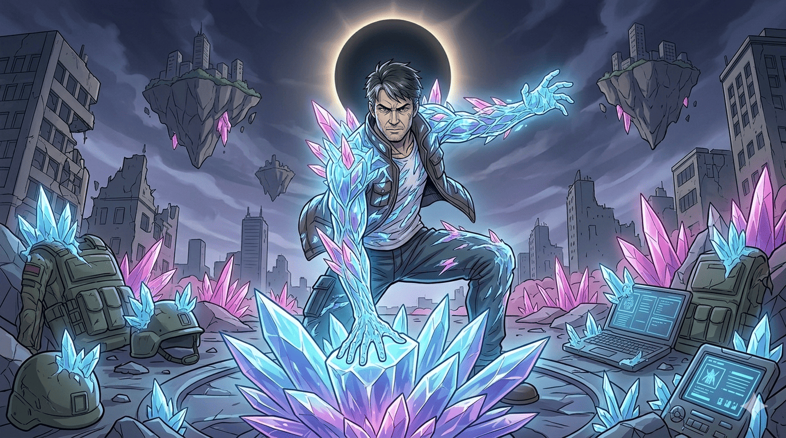
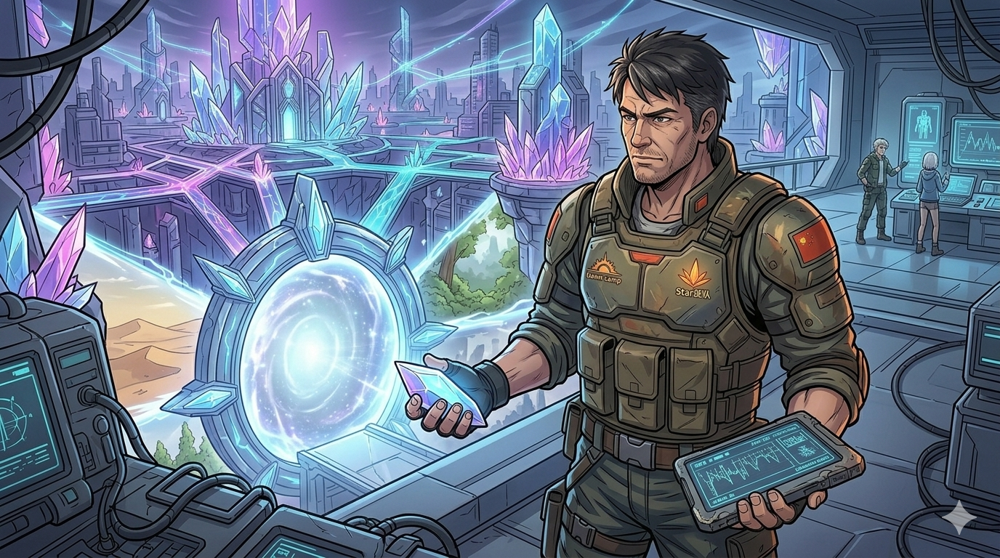
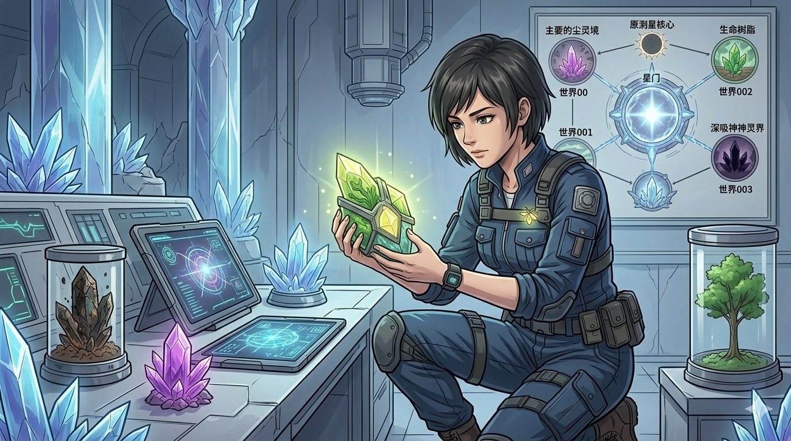
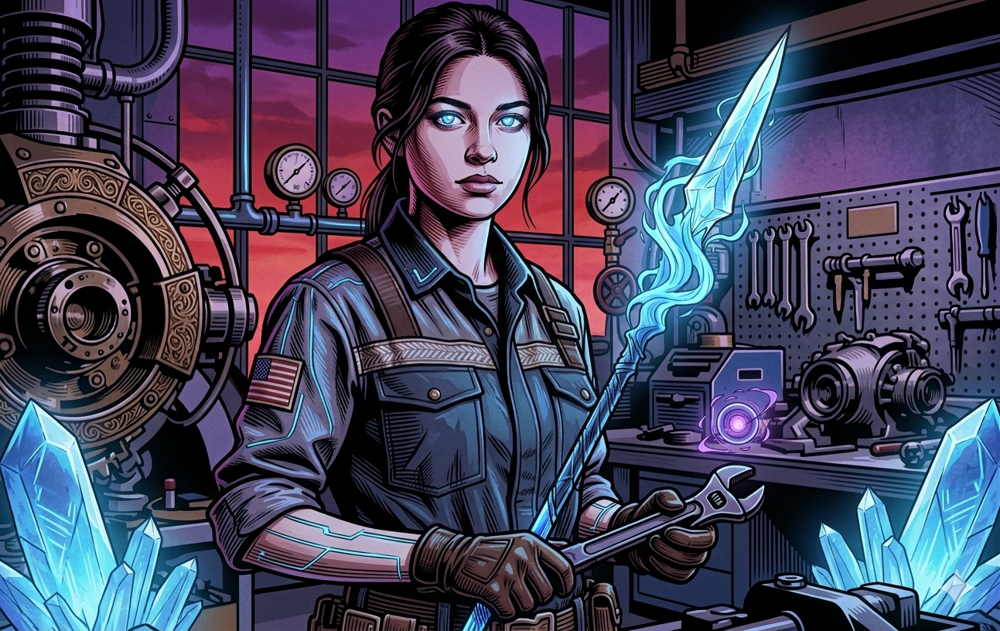
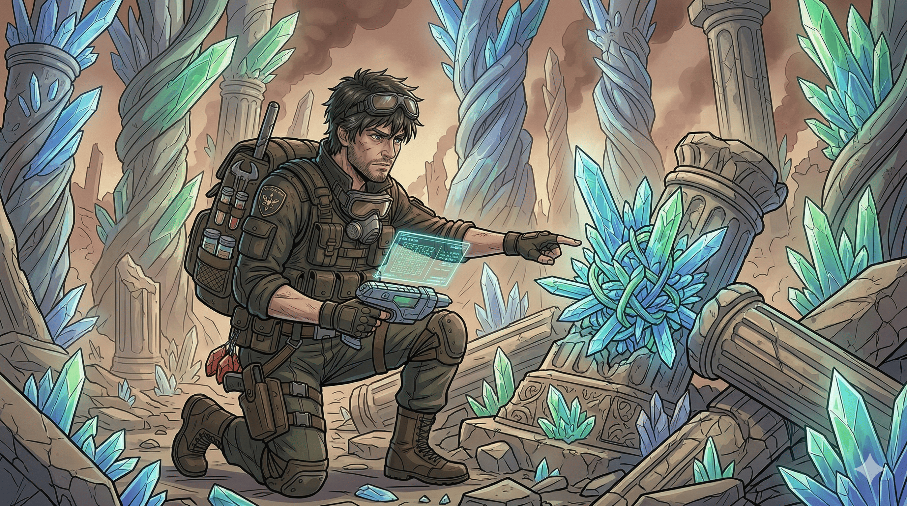
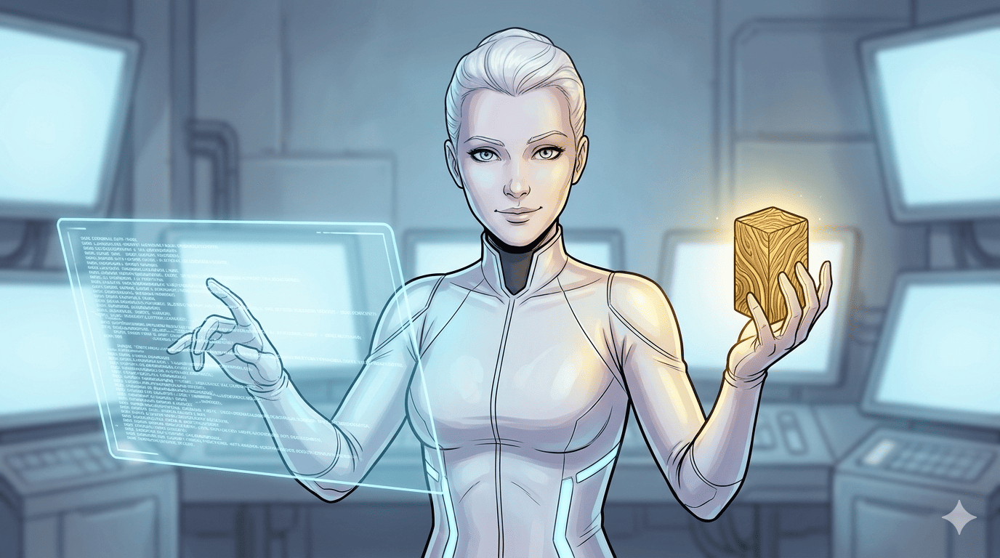
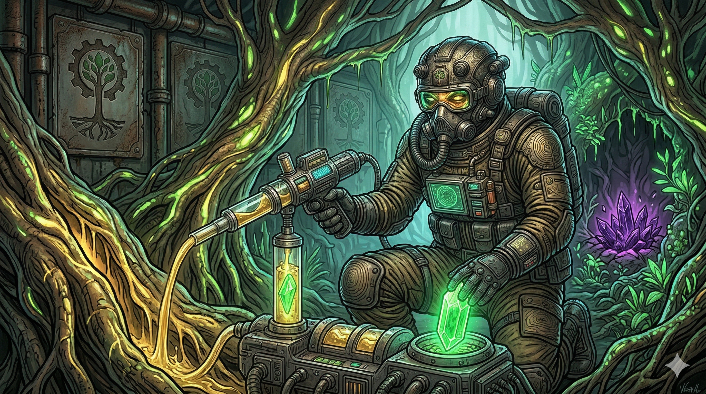
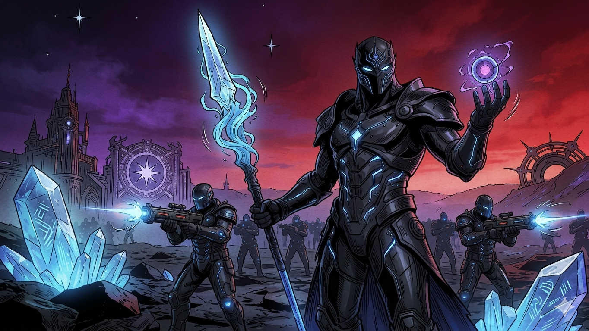

前世纪爆发“星蚀”与晶化病，英雄迈克献身暂缓了危机。如今，人类发现晶石不仅提供能源，其内部交织的“时空经纬”更促成了“星门”的建立，开启了平行世界的探索。
001“赤岩废土”因滥用晶石导致文明毁灭，满布毒尘；而002“绿境繁生”则因“数码种子”与“生命树脂”的发现，从冰冷钢铁化作建筑与绿植共生的生命奇迹。
003“暗晶神域”因能源枯竭走向掠夺，企图入侵尘界。最终各界联合，以生命树脂融合本源晶石创造出“绿晶”，净化了暗晶能量，签订了多元宇宙的共生盟约。
跨越不同维度的守护者，在多元宇宙中拼凑出生命的答案。

前世纪英雄
在“星蚀”灾难爆发时，牺牲自己拯救了世界，为人类后续研究晶石争取了宝贵的时间。

星巡队队长
前曙光营地首领，带领首批穿越者踏入星门，并在多元宇宙战争中指挥了最终防卫战。

星巡队先锋
经验丰富的战士与科学家，携带着晶石能源设备，勇敢地在各个平行世界中执行探索任务。

星巡队骨干
带着对未知的敬畏记录着时空数据，与烬、小萤一起构成了星门探索计划的核心力量。

赤岩废土幸存者
001平行世界幸存者领袖。在毒尘中艰难求生，被救回后加入星巡队，成为探索异星的宝贵向导。

绿境繁生首领
发现“数码种子”，成功将002平行世界的冰冷钢铁废墟，修复为生机勃勃的生命绿境。

绿境繁生首领
发现了延长生命的“生命树脂”。在对抗暗晶军团的危机中，他的树脂成为了合成“绿晶”的关键。

暗晶军团首领
因003世界能源面临枯竭而走上掠夺之路。战败投降后，接受了绿晶的净化救赎，并签订了共生盟约。
前世纪爆发“星蚀”灾难与晶化病，英雄迈克牺牲自我拯救世界。幸存的人类开始利用自然形成的晶石能量，维持星核尘界的文明运转。
科学家发掘出晶石内部的“时空经纬”，第一座星门落成。由 Ember 带领的星巡队首次踏入编号001“赤岩废土”，在毒尘中救回了以 Kevin 为首的幸存者，揭示了滥用晶石的代价。
星巡队结识了002“绿境繁生”的 Elara 与 Jax，带回了生命树脂。然而，因能源枯竭而陷入疯狂的003“暗晶神域”首领 Dark 率军突袭，多界危机爆发。